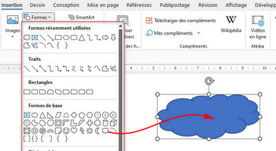
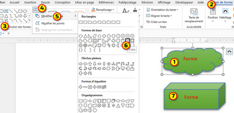
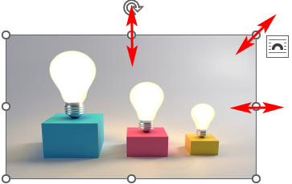
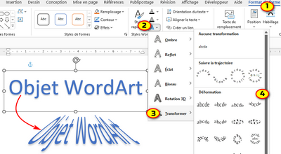
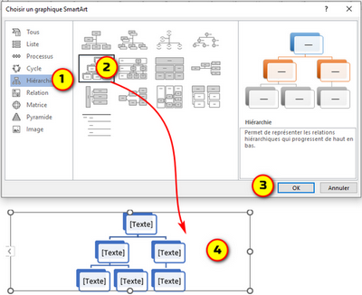

IV) Insérer une forme, une image, un objet WordArt et un objet SmartArt
1. Insérer une forme
✔ Dans l’onglet «Insertion» cliquer sur «Formes»
✔ Cliquez sur la forme souhaitée puis glisser la souris pour délimiter la forme.
✔ tapez un texte dans votre forme.

Ajouter un style rapide à une forme:
✔ Cliquez sur la forme à laquelle vous voulez appliquer un style rapide
✔ Dans le groupe «Styles de formes » de l’onglet «Format de formes», cliquez sur le style rapide qui vous intéresse.
Passage d’une forme à une autre:
✔ Cliquez sur la forme que vous souhaitez modifier.
✔ Dans le groupe «Format des formes» de l’onglet «Insérer des formes», cliquez sur: «Modifier la forme» puis cliquez sur la nouvelle forme souhaitée.

2. Insérer une image
✔ Cliquer à l’endroit où vous souhaitez insérer une image
✔ Dans l’onglet «Insertion» cliquer sur «Image»
✔ Effectuez l’une des opérations suivantes :
✔ Effectuez l’une des opérations suivantes :
- Sélectionnez l'option «Cet appareil» pour une image sur votre PC.
- Sélectionnez l'option «Images de photothèque» pour les images ou arrière-plans de haute qualité.
- Sélectionnez l'option «Images en ligne » pour une image sur le web.
✔ Sélectionnez l’image souhaitée, puis cliquez sur Insérer.
redimensionner une image:
✔ Sélectionnez l’image à redimensionner
✔ Cliquer sur les points situés dans l’extrémité
✔ glisser le pointeur plus loin ou plus près du centre

3. Insérer un objet WordArt
✔ Cliquer à l’endroit où vous souhaitez insérer un objet WordArt
✔ Dans l’onglet «Insertion» cliquer sur l'icône «WordArt»
✔ Cliquez sur le style WordArt souhaité puis tapez votre texte dans le champ qui apparaît.
Ajouter des effets du texte:
✔ Sélectionnez l’objet WordArt.
✔ Dans le groupe «Style WordArt» de l'onglet «format de forme», cliquer sur « Effets de texte»
✔ Cliquer sur «Transformer» puis sélectionnez l'effet souhaité.

4. Insérer un objet SmartdArt
✔ Cliquer à l’endroit où vous souhaitez insérer un objet SmartdArt
✔ Dans l’onglet «Insertion» cliquer sur l'icône «SmartArt»
✔ Dans la zone située à gauche de la boîte de dialogue, sélectionnez le type de disposition souhaitée.
-«Les dispositions correspondant au type choisi s’affichent dans la partie centrale de la boîte de dialogue »
✔ Sélectionnez la disposition souhaitée et cliquer sur
«ok»
✔ Saisissez le texte dans les différentes formes du diagramme

Ajouter une forme:
✔ Cliquez avec le bouton droit sur [texte] puis pointez sur: «Ajouter une forme»
✔ cliquer sur: «Ajouter la forme avant» , «Ajouter la forme après», «Ajouter la forme au-dessus» ou «Ajouter la forme en dessous»
Modifier la disposition de graphique
✔ Dans le groupe «Disposition» de l’onglet «Outils SmartArt», sélectionnez la disposition souhaitée.